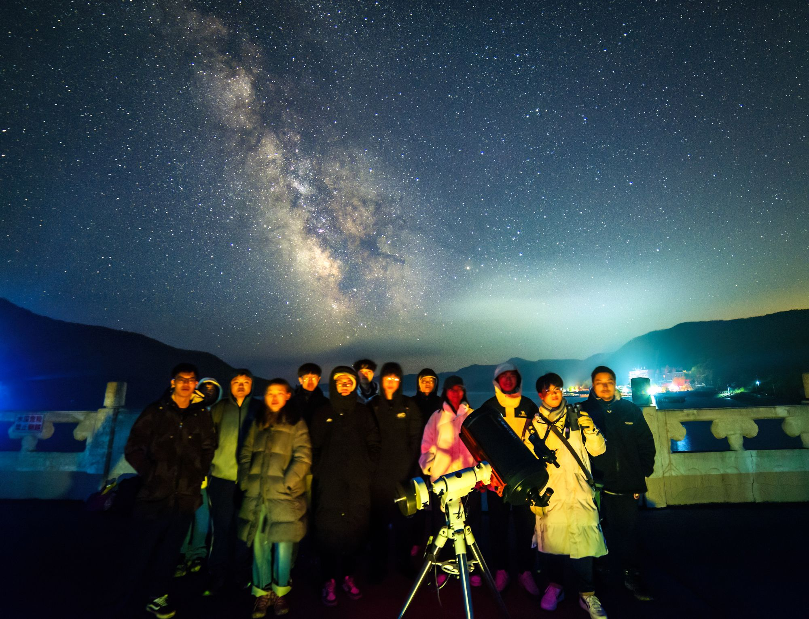

观测组
器材维护、活动选址与天象预报，通常从这里发起。 哪一晚适合出门，先看星历和天气，再在群里喊一声。
About us
一个由学生自主运营的天文社团。二十二年过去，我们还在做同一件事： 把望远镜架起来，让人看一眼真正的星空。
关于我们
长春理工大学天文协会成立于 2004 年 3 月 15 日，由几位在操场上辨认星座的同学发起，如今已经走过了二十二年。
我们的活动从最简单的事情开始：把望远镜搬到人多的地方，让路过的人看一眼土星环。 很多成员的第一张月面照片，就诞生在这样一个普通的夜晚。
二十二年里，器材在换、人在换、观测的地点也在换，但方式没变过 —— 找一个能把灯关掉的地方，等天暗下来，然后一个个把看到的东西指给旁边的人看。
我们不是天文专业的学生，也不要求新成员有任何基础。你只需要对头顶那片东西好奇， 剩下的，器材、方法、连同看星星的习惯，都可以在这里慢慢学。

兴趣方向
协会设有观测组、摄影组与科普组 —— 但这不是严格的分工，也从来没有「只能选一个」的说法。 三个小组更像三个方向：谁对什么感兴趣，就去做那件事，很多人三边都参与。 没有人被分配任务，但每件事都有人愿意做。
器材维护、活动选址与天象预报，通常从这里发起。 哪一晚适合出门，先看星历和天气，再在群里喊一声。
深空与广域拍摄、后期处理，是这里的日常话题。 成员拍到的作品会在摄影工坊里一起看，交流怎么拍、怎么修。
对接中小学与社区，把星空带出校园。 讲座、路边天文、对外讲解，多数从这里组织起来。
常见问题
不需要。协会配备在役望远镜与赤道仪，成员无需自备设备即可参加全部观测活动。
可以。我们每学期开设入门课程，从认星、对极轴到堆栈后期。 我们欢迎你来，希望你玩得开心，至于天文学知识，忘掉它吧。
地点固定在朝阳校区东区物理学院，时间不固定 —— 观测要看天气， 具体安排以群消息为准。
加 QQ 群 884842421，或关注公众号「东北亚皇家理工天文」。